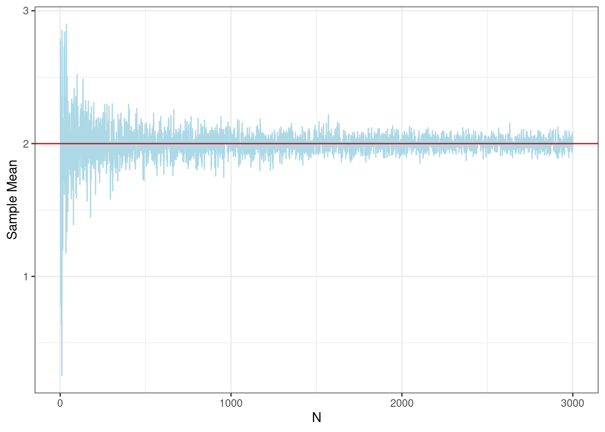
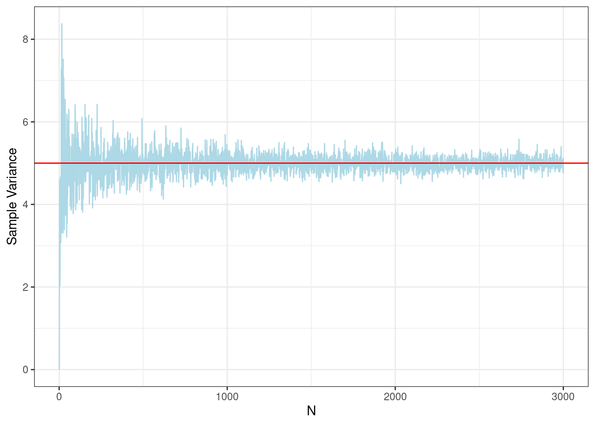
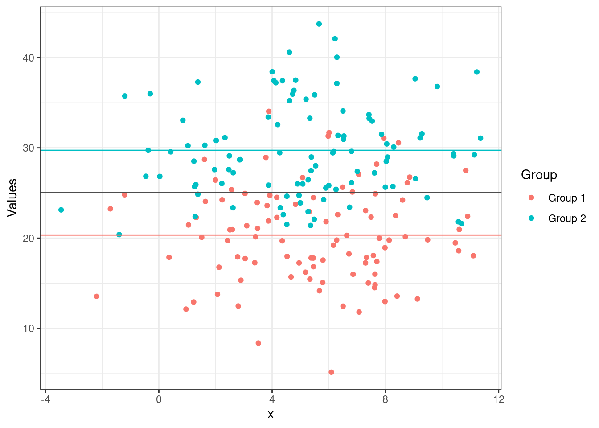
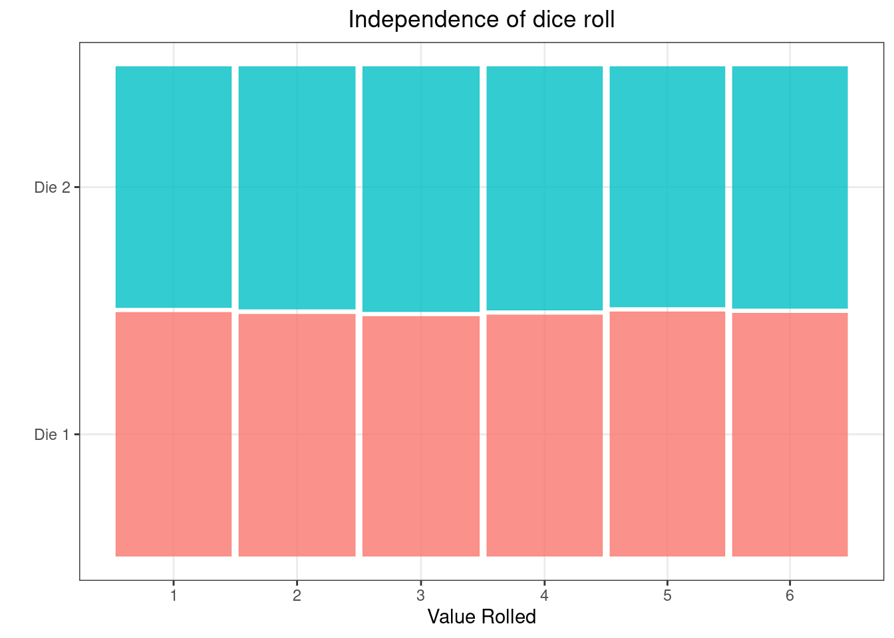

Discussion 2. Stats review
To execute these simulations locally, download the .Rmd here
12.1 Sample expectations converge to population
We can generate simulations to show that sample mean and variance converge to population values.
true_mean <- 2
true_var <- 5
sample_mean_seq <- 1:3000
sample_means <- vapply(
sample_mean_seq,
\(x) mean(rnorm(n = x, mean = true_mean, sd = sqrt(true_var))),
numeric(1)
)
sample_variances <- vapply(
sample_mean_seq,
\(x) {
data <- rnorm(n = x, mean = true_mean, sd = sqrt(true_var))
sample_mean <- mean(data)
sum((data - sample_mean)^2)/length(data)
},
numeric(1)
)
means <- tibble("N" = sample_mean_seq, "Sample Mean" = sample_means)
vars <- tibble("N" = sample_mean_seq, "Sample Variance" = sample_variances)
colors <- c("Sample Mean" = "lightblue", "Population Mean" = "red")
ggplot(means, aes(y = `Sample Mean`, x = N)) +
geom_line(color = "lightblue") +
geom_abline(slope = 0, intercept = true_mean, color = "red") +
theme_bw()
ggplot(vars, aes(y = `Sample Variance`, x = N)) +
geom_line(color = "lightblue") +
geom_abline(slope = 0, intercept = true_var, color = "red") +
theme_bw()
12.2 Simulate conditional expectations
Simulate conditional expectations within groups that differ from the sample mean.
group1_means <- rnorm(100, mean = 20, sd = 5)
group2_means <- rnorm(100, mean = 30, sd = 5)
group_means <- data.frame(
"Group" = c(rep("Group 1", 100), rep("Group 2", 100)),
"Values" = c(group1_means, group2_means),
"x" = rnorm(200, 5, sd = 3)
)
ggplot(group_means, aes(x = x, y = Values, color = Group)) +
geom_point() +
geom_abline(
slope = 0,
intercept = mean(group_means$Values),
show.legend = TRUE,
color = "gray30"
) +
geom_abline(
slope = 0,
intercept = mean(group_means[group_means$Group == "Group 1", ]$Values),
show.legend = TRUE,
color = "#F8766D"
) +
geom_abline(
slope = 0,
intercept = mean(group_means[group_means$Group == "Group 2", ]$Values),
show.legend = TRUE,
color = "#00BFC4"
) +
theme_bw()
12.3 Show independence of variables - example of two dice rolling
dice_1 <- sample(1:6, 100000, replace = TRUE)
dice_2 <- sample(1:6, 100000, replace = TRUE)
dice <- tibble(
"dice" = c(rep("Die 1", 100000), rep("Die 2", 100000)),
"value" = c(dice_1, dice_2)
)
ggplot(data = dice) +
geom_mosaic(aes(x = product(dice, value), fill = dice)) +
labs(y="", x="Value Rolled", title = "Independence of dice roll") +
theme_bw() +
theme(plot.title = element_text(hjust = 0.5), legend.position = "none")